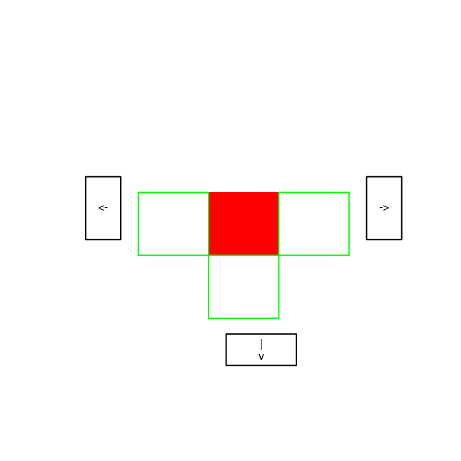
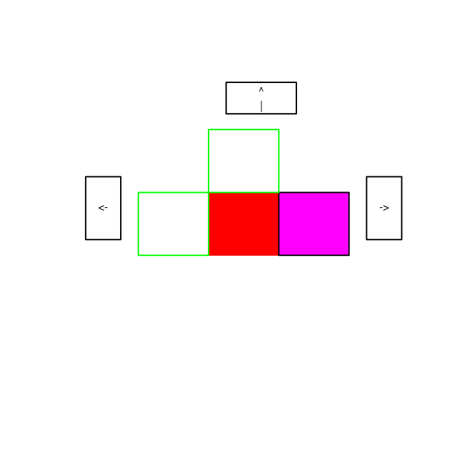
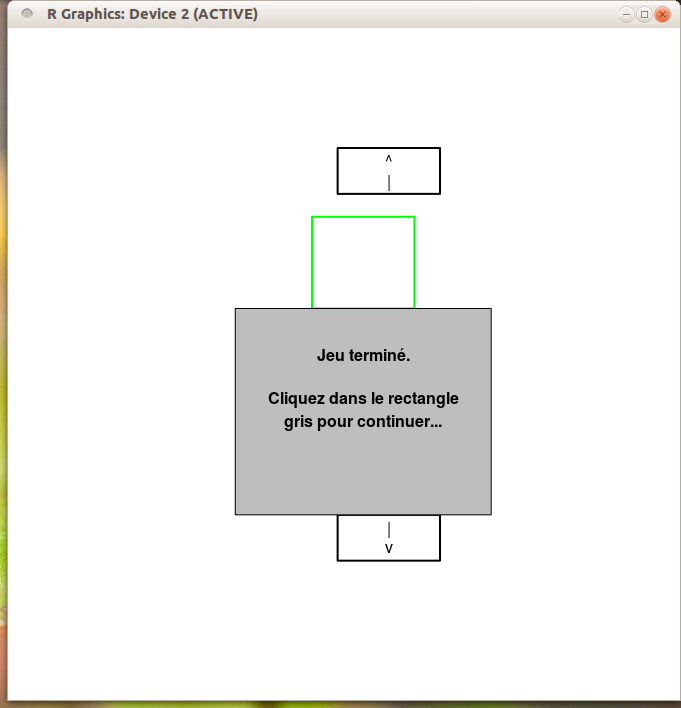

Laissez-moi sortir !
Vous allez réaliser une expérience. Celle-ci consiste à trouver la
sortie d'un labyrinthe. Contrairement aux labyrinthes que vous
survolez, vous allez être immergé dans le labyrinthe (enfin presque).
Le but est de mesurer votre courbe d'apprentissage face à cette
tâche : allez-vous trouver la sortie de plus en plus vite ?
- Dans R, tapez la commande source ("https://philippe-preux.github.io/ensg/aeac/tps/labyrinthe/laby.R")
(Faites un copier/coller pour éviter les fautes de frappes.)
- L'expérience est lancée ; passez-là.
- Un graphique apparaît ressemblant à celui-ci (ce n'est pas exactement celui-là, c'est normal) :

Vous vous trouvez dans la case rouge et vous pouvez vous déplacer dans l'une des cases bordées de vert en cliquant dans l'une des cases de direction.
- Quand vous serez à côté de la sortie, vous verrez ceci :

Vous êtes dans la case rouge et la sortie et en magenta. Il vous reste 1 pas à faire dans la bonne direction. Faites-le.
- Vous aurez alors la fenêtre suivante :

Cliquez dans le rectangle gris comme demandé et on recommence.
- Vous le refaites 20 fois.
Fichier de résultats
Le fichier laby4....txt contient une ligne par clic. Chaque ligne contient les informations suivantes :
- le numéro de l'épisode (entre 1 et 20)
- le numéro du clic/mouvement durant l'épisode
- l'instant du clic
- le nombre de secondes écoulées depuis le début de l'épisode
- le numéro de la case dans laquelle on se trouve (un nombre entier)
- le mouvement effectué (gauche = 1, droite = 2, haut = 3, bas = 4)
- 1 si la sortie est atteinte, 0 sinon
- 1 si l'épisode est terminé, 0 sinon
Analyse des résultats expérimentaux
Tous les éléments pour résoudre ces questions ont été vus précédemment.
- Chargez le fichier de résultats dans un data.frame dénommé resultats. Les colonnes seront nommées respectivement : episode, clic, instant, t, n, mvt, sortie, fin.
- Remarque : un épisode s'arrête soit parce que la sortie a été atteinte, soit parce que vous avez effectué 200 clics sans trouver la sortie. Quelle qu'en soit la raison, l'attribut fin indique si l'épisode est fini ou pas.
- Sur les 20 épisodes, combien de fois avez-vous atteint la sortie ?
- Lors de quels épisodes n'avez-vous pas atteint la sortie ?
- Mettez dans un vecteur dénommé nb.clics.pour.sortir ce nombre de clics que vous avez effectués pour atteindre la sortie. Si la sortie n'a pas été atteinte, mettez NA.
- En moyenne, en combien de clics avez-vous atteint la sortie ?
- Faites un graphique de ce nombre de clics pour sortir pour chaque épisode (l'épisode en abscisses, le nombre de clics en ordonnées ; si NA, ne mettez-rien).
- Observez-vous une tendance ? Ce nombre de clics pour atteindre la sortie semble-t-il diminuer au fil des épisodes ?
- Ajoutez à votre graphique une ligne horizontale indiquant la moyenne et ajoutez une ligne en pointillés à - 1 écart-type et + 1 écart-type.
- Ajoutez-y aussi une ligne un peu plus épaisse qui représente la médiane.
Durée des épisodes :
- Mettez dans un vecteur dénommé duree.des.episodes le temps (en secondes) qu'a duré chacun des épisodes.
- Y a-t-il une corrélation linéaire entre la durée d'un épisode et le nombre de clics pendant l'épisode ?
- Faites un plot de la durée d'un épisode en fonction du nombre de clics pendant l'épisode. Cela confirme-t-il votre réponse à la question précédente ?
- Pour cette question et la suivante, on ne s'intéresse qu'aux épisodes au cours desquels vous avez atteint la sortie. Mettez dans un vecteur dénommé duree.episodes.ayant.atteint.la.sortie la durée de l'épisode.
- Cette durée a-t-elle tendance à diminuer ?
Temps d'émission d'un comportement :
- Déterminer s'il y a des actions qui prennent significativement plus de temps à être émises que les autres. Ces actions sont-elles particulières ? Sont-elles émises dans des zones particulières du labyrinthe ? Durant la tâche ? Durant certains épisodes ? ...
Pour vous aider, je vous dévoile le plan du labyrinthe.
Divers :
- Créer une matrice dénommée décomptes.des.mvt ayant le nombre de lignes et de colonnes adéquat pour répondre à la question qui suit. Dans cette matrice, vous mettez le nombre de clics sur chacun des mouvements pour chacun des épisodes. Autrement dit, la ligne i de la matrice contient le nombre de mouvements 1 (à gauche) dans la colonne 1, ... le nombre de mouvements 4 (vers le bas) dans la colonne 4.
- Créer une matrice dénommée nb.visites ayant autant de lignes que d'épisodes et autant de colonnes que de cases. Remplissez-la avec le nombre de visites à une case donnée lors de chacun des épisodes.
- Pour chaque épisode, déterminez le nombre de cases que vous avez visitées durant l'épisode. Mettez cette information dans un vecteur dénommé nb.cases.visitées
- Faites un plot des valeurs de ce vecteur.
- Observez-vous une tendance ?
- Le vecteur distance.a.la.sortie contient le nombre de clics à effectuer pour atteindre la sortie par le chemin le plus court à partir d'une case spécifiée par son numéro. Faites un plot représentant cette distance à chaque clic de chaque épisode.
- Faites le plot représentant la distance en fonction du temps écoulé depuis le début de l'épisode.
- Pour chaque épisode, comptez le nombre de clics qui vous ont éloigné de la sortie. Mettez ces décomptes dans un vecteur dénommé nb.clics.qui.eloignent.
- Faites un plot des valeurs de ce vecteur.
- Observez-vous une tendance ?
- Ce nombre de clics qui éloignent est-il corrélé au nombre de clics effectués durant chacun des épisodes ?
- Pour chaque épisode, déterminez la proportion d'actions qui ont été optimales (c'est-à-dire, les actions vous ont rapproché de la sortie). Mettez ces proportions dans un vecteur dénommé proportion.actions.optimales
- Faites un plot des valeurs de ce vecteur.
- Observez-vous une tendance ?